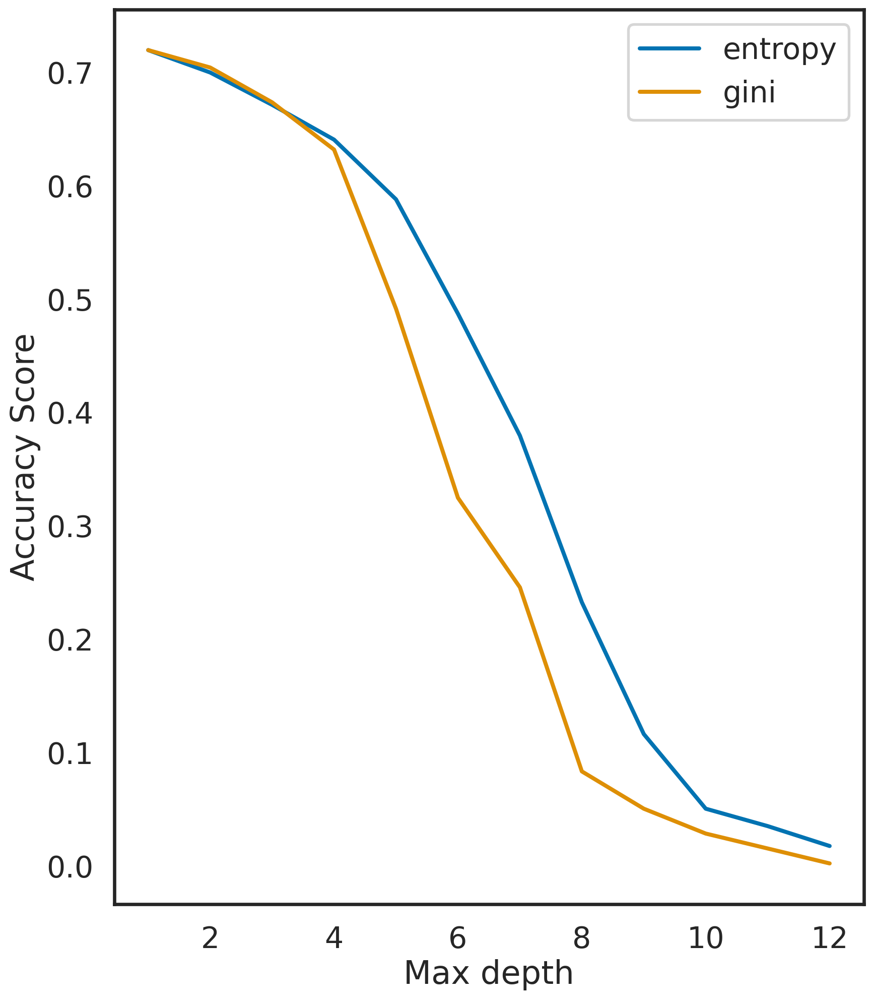
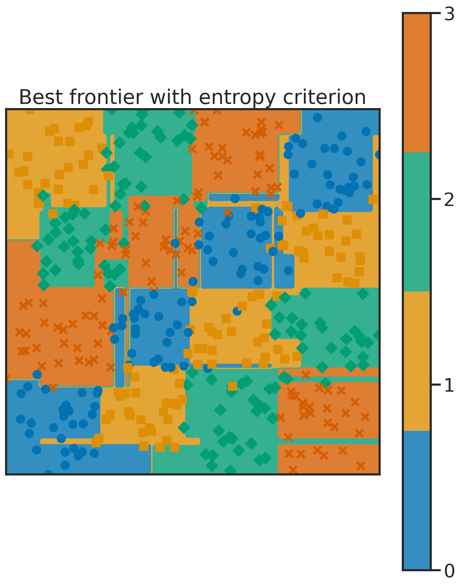
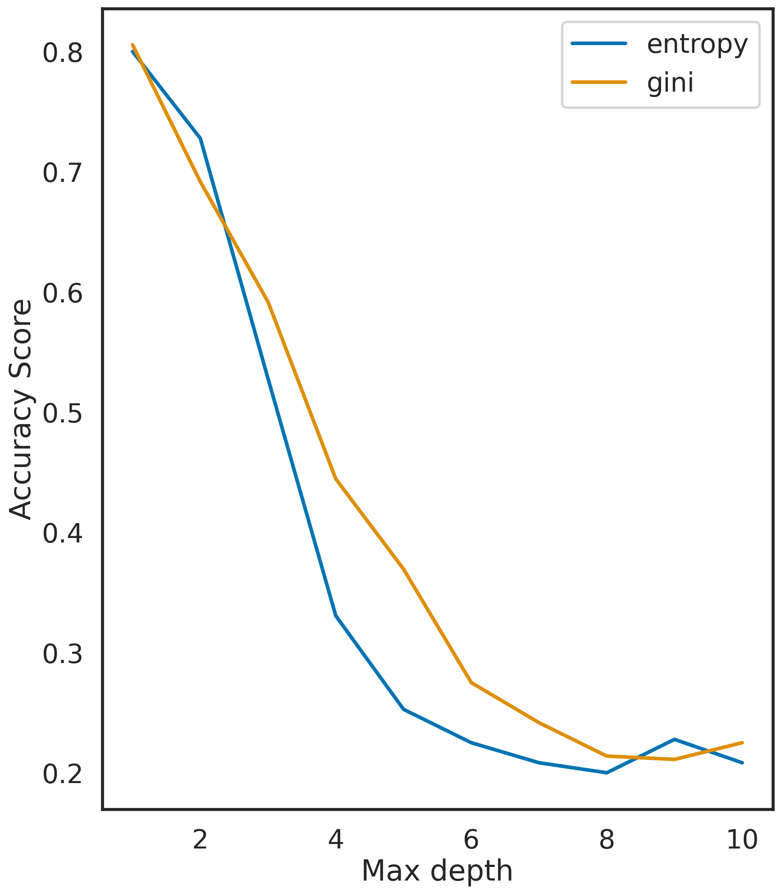

n1 = 118
n2 = 118
n3 = 118
n4 = 120
sigma = 0.1
data4 = rand_checkers(n1, n2, n3, n4, sigma)Travail Pratique 2 - ARBRES
Nous allons manipuler des arbres de décision dans le cadre d’une classification. A partir de différentes variables, nous souhaitons attribuer une étiquette (ici des entiers naturels) à un individu.
Dans le cadre du modèle linéaire, on cherche à prédire une valeur numérique à partir des valeurs que prennent des variables et non une classe.
Il nous est possible de définir une certaine homogénéité. Par exemple, deux valeurs numériques pourrait appartenir à la même classe si leurs parties entières sont égales.
Cela nous permettrait de créer des arbres de décision pour des ensembles d’apprentissage \(\{ (\textbf{x}_i, y_i)_{1\leq i \leq n}\}\).
On simule une réalisation d’un échantillon de taille 456 avec la fonction rand_checkers définie dans tp_arbres_source.py.
On crée deux objets : dt_entropy et dt_gini à partir de la fonction DecisionTreeClassifier du module tree qui nous servent à créer deux arbres de décision (selon le critère de l’entropie et selon le critère de gini pour le deuxième) à partir de nos observations data4.
dt_entropy = tree.DecisionTreeClassifier(criterion="entropy")
dt_gini = tree.DecisionTreeClassifier(criterion="gini")A partir de l’ensembe d’apprentissage data4, on nomme X_train les observation (qui sont des couples) et y_train leurs étiquettes.
data = data4
n_samples = len(data)
X_train = data4[:,0:2]
y_train = data4[:,2].astype(int)Pour des profondeurs variant de 1 à 12, on calcule le pourcentage d’erreurs commises par les arbres des deux types (Entropie et Gini). Le pourcentage d’erreurs est calculé grâce au score donné par le module score de la fonction DecisionTreeClassifier. On obtient ainsi le pourcentage d’erreur de chaque arbre en fonction de leur profondeur, on trace leurs courbes.
dmax = 12
scores_entropy = np.zeros(dmax) #vecteur qui contiendra les score des arbres entropy
scores_gini = np.zeros(dmax) #vecteur qui contiendra les score des arbres gini
for i in range(dmax):
dt_entropy = tree.DecisionTreeClassifier(criterion="entropy", max_depth=i+1)
dt_entropy.fit(X_train, y_train)
scores_entropy[i] = dt_entropy.score(X_train, y_train)
dt_gini = tree.DecisionTreeClassifier(criterion="gini", max_depth=i+1)
dt_gini.fit(X_train, y_train)
scores_gini[i] = dt_gini.score(X_train, y_train)
Le nombre de nœuds qui minimise le pourcentage d’erreurs est
p = 1-scores_entropy
m = min(p)
np.where(p == m)[0][0]+112Affichons la classification obtenue avec l’arbre de l’entropie à l’aide de la fonction frontiere du fichier tp_arbres_source.py.
dt_entropy.max_depth = 12
plt.figure()
frontiere(lambda x: dt_entropy.predict(x.reshape((1, -1))), X_train, y_train, step=100)
plt.title("Best frontier with entropy criterion")
plt.draw()
Exportons l’arbre de décision à 12 nœuds estimé avec X_train et y_train de notre ensemble d’apprentissage data4 au format pdf.
import graphviz
clf = dt_entropy.fit(X_train, y_train)
dot_data = tree.export_graphviz(clf, out_file=None)
graph = graphviz.Source(dot_data)
graph.render("checkers_tree") 'checkers_tree.pdf'Simulons un nouvel ensemble d’apprentissage data_test d’un echantillon de taille 160 suivant la même loi que l’échantillon simulé pour obtenir data4.
data_test = rand_checkers(40, 40, 40, 40, sigma)
X_test = data_test[:,0:2] #observations
y_test = data_test[:,2].astype(int) #étiquettesOn calcule le pourcentage d’erreurs de l’estimation de y_test par les arbres au critère de gini et au critère d’entropie (entraînés avec X_train et y_train) pour des profondeurs de 1 à 11.
On procède de la même manière que pour le calcul du pourcentage d’erreurs empirique précédent.
dmax = 11
scores_entropy = np.zeros(dmax)
scores_gini = np.zeros(dmax)
for i in range(dmax):
dt_entropy = tree.DecisionTreeClassifier(criterion="entropy", max_depth=i+1)
dt_entropy.fit(X_train, y_train)
scores_entropy[i] = dt_entropy.score(X_test, y_test)
dt_gini = tree.DecisionTreeClassifier(criterion="gini", max_depth=i+1)
dt_gini.fit(X_train, y_train)
scores_gini[i] = dt_gini.score(X_test, y_test)Contrairement au calcul du pourcentage d’erreurs empirique, l’estimation peut se dégrader en augmentant la profondeur de l’arbre. En effet, plus l’arbre estimé est profond, plus il est adapté à la prédiction sur son ensemble d’apprentissage et n’est plus forcément robuste sur de nouvelles données.
Aplication à la reconnaissance de chiffres sur des images
Nous réitérons les étapes précédentes en utilisant cette fois des données réelles:
Nous importons ici (grâce à sklearn) un tableau contenant à chaque ligne un 16_uplets d’entiers de 0 à 16 ; chaque uplet un codage d’une image de chiffre (0, 1, 2, 3, etc.). Le chiffre codé par un uplet sera donc son étiquette.
On définit en ensemble d’apprentissage X_train, y_train représentant 80% des données importées, le reste des données nous sert d’ensemble de validation et est nommé X_test, y_test.
digits = datasets.load_digits()
n_samples = len(digits.images)
data_X = digits.images.reshape((n_samples, -1))
data_y = digits.target
X_train, X_test, y_train, y_test = train_test_split(
data_X, data_y, test_size=0.2, shuffle=False)Comme précédemment, on estime des arbres de prédiction selon les critères d’entropie et de Gini pour des profondeurs allant de 1 à 12, et on calcule le pourcentage d’erreurs sur l’ensemble d’apprentissage de chaque arbre. On trace le pourcentage d’erreurs des deux types d’arbres en fonction de leurs profondeurs.
dmax = 12
scores_entropy = np.zeros(dmax) #vecteur qui contiendra les score des arbres entropy
scores_gini = np.zeros(dmax) #vecteur qui contiendra les score des arbres gini
for i in range(dmax):
dt_entropy = tree.DecisionTreeClassifier(criterion="entropy", max_depth=i+1)
dt_entropy.fit(X_train, y_train)
scores_entropy[i] = dt_entropy.score(X_train, y_train)
dt_gini = tree.DecisionTreeClassifier(criterion="gini", max_depth=i+1)
dt_gini.fit(X_train, y_train)
scores_gini[i] = dt_gini.score(X_train, y_train)Le nombre de nœuds qui minimise le pourcentage d’erreurs est
p = 1-scores_entropy
m = min(p)
np.where(p == m)[0][0]+110Nous ne pouvons pas afficher la classification obtenue car ici les observations sont dans \(\mathbf{R}^{16}\).
Exportons l’arbre de décision à 10 nœuds estimé avec X_train et y_train de notre ensemble d’apprentissage data4 au format pdf.
dt_entropy = tree.DecisionTreeClassifier(criterion="entropy", max_depth=10)
import graphviz
clf = dt_entropy.fit(X_train, y_train)
dot_data = tree.export_graphviz(clf, out_file=None)
graph = graphviz.Source(dot_data)
graph.render("digits_tree") 'digits_tree.pdf'Enfin, on estime les chiffres représentés par les images de notre ensemble de validation et on trace les courbes de pourcentage d’erreur (pour des profondeurs d’arbre jusqu’à 10):
dmax = 10
scores_entropy = np.zeros(dmax)
scores_gini = np.zeros(dmax)
for i in range(dmax):
dt_entropy = tree.DecisionTreeClassifier(criterion="entropy", max_depth=i+1)
dt_entropy.fit(X_train, y_train)
scores_entropy[i] = dt_entropy.score(X_test, y_test)
dt_gini = tree.DecisionTreeClassifier(criterion="gini", max_depth=i+1)
dt_gini.fit(X_train, y_train)
scores_gini[i] = dt_gini.score(X_test, y_test)
Décidons de la profondeur de l’arbre grâce à la validation croisée (nous utilisons la fonction sklearn.cross_validation.cross_val_score)
from sklearn.model_selection import cross_val_score
dmax = 10 #on calcule l'estimation du score
#pour des arbres de profondeur de 1 à 10
scores = np.zeros(dmax) #vecteur qui doit contenir les estimation du score
#pour chaque profondeur d'arbre, on calcule le score estimé par validation croisée sur des
#partitions de 5 sous-ensembles de nos données (d'où le "cv=5")
#on choisit par la suite l'arbre qui a le plus grand score.
for i in range(dmax):
arbre = tree.DecisionTreeClassifier(criterion="entropy", max_depth=i+1)
scores[i] = cross_val_score(arbre, data_X, data_y, cv=5).mean()
scoresarray([0.19532807, 0.33443516, 0.50306097, 0.63218508, 0.73404828,
0.77521665, 0.80638657, 0.80637574, 0.81080935, 0.79970288])On obtient le plus grand score estimé avec une profondeur d’arbre égale à 9.